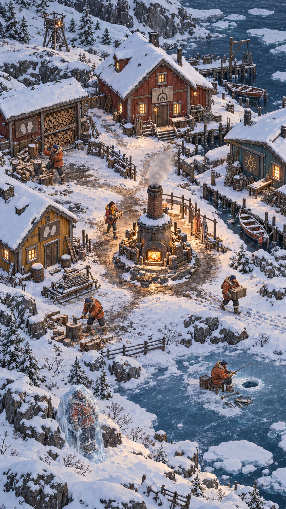
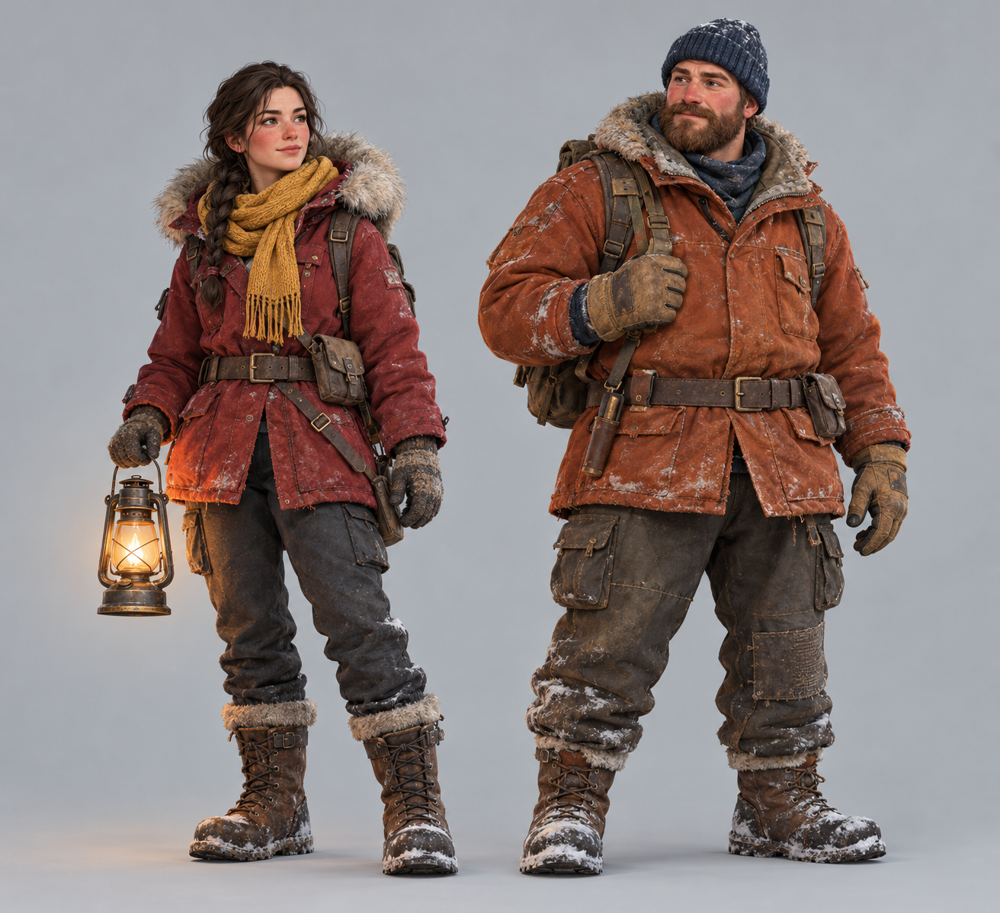
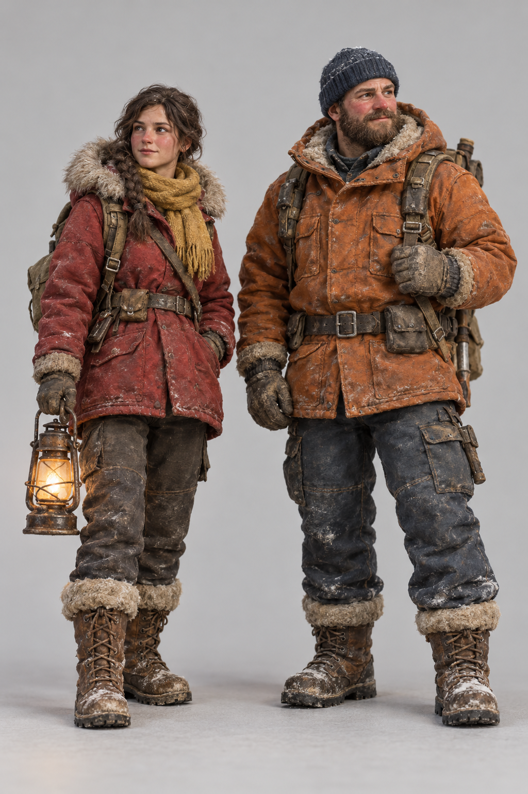
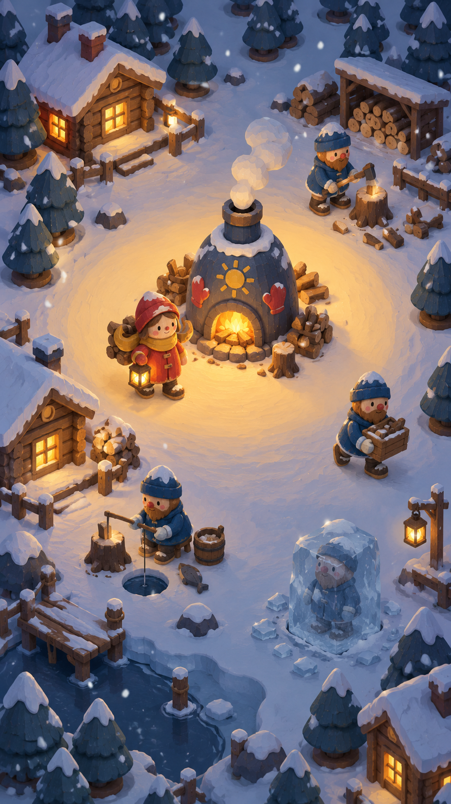
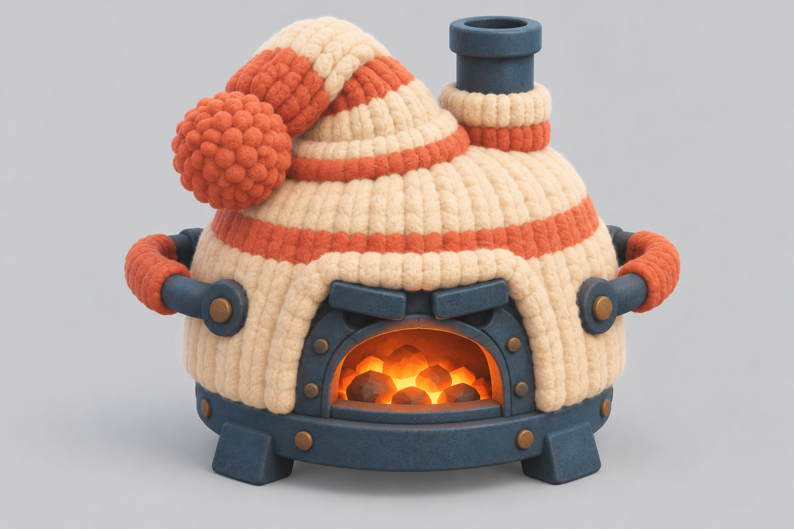
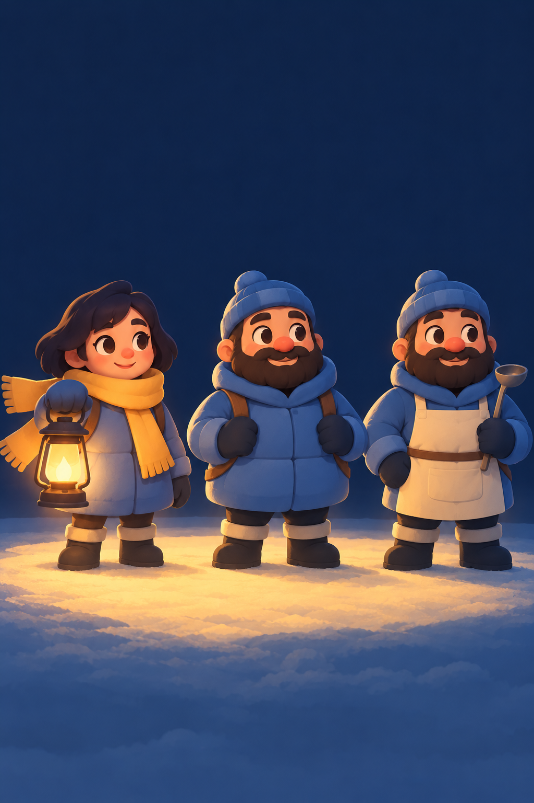
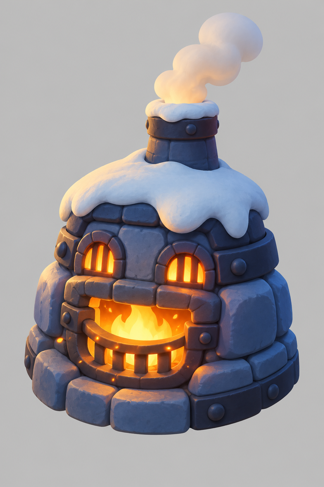

Frostbite2: visual direction
Visual direction mock-ups for Frostbite2. Each concept has a character lineup (also redesigns), a gameplay frame at the real camera angle, and the furnace as a Tripo-ready hero object. All images are ChatGPT mock-ups (Codex bridge), 2026-10-20. They're for choosing a direction only; models still come from Tripo.
Round 2: more realistic (2026-10-20)
Round 1 read as "made by AI". These use realistic adult proportions, real winter clothing, architecture from real Arctic villages, natural light and worn, lived-in materials. Prompts ruled out big cute eyes, toy proportions, gloss, bloom and sparkle. All three share one character design (lineups below) and the town motifs you picked: mittens, a crooked sun and a furnace-mouth mark on doors and signs.
A. Nordic village
Grounded stylised realism. A Svalbard / Norwegian fishing-village settlement in blue-hour light.


Why
- A real place gives it identity: Falu-red, ochre and teal houses, a harbour, sleds and fishing gear.
- The most colourful of the three, so it stays warm rather than grim.
- The town motifs read naturally as painted door signs.
- The furnace is a fieldstone-and-iron village oven, not a sci-fi generator tower.
Risks
- The people are tiny; Meagan needs her red coat and lantern to stay findable.
- The image's detail is far beyond a phone game. The real game keeps the colours, light and shapes, not every rope and crate.
B. Miniature diorama
A real hobbyist model village, photographed with a macro lens: cotton snow, painted wood, clay figures.


Why
- Real-looking materials with a handmade, cosy charm.
- The tilt-shift "toy world" feel is easy to recreate in Godot (depth of field at the screen edges).
Risks
- Muted and brownish; the warmth contrast is weaker.
- The lineup came out as real people, not clay figures, so the characters need their own pass.
C. Painterly realism
Realistic shapes with hand-painted textures and long low-sun shadows.


Why
- The most atmospheric, with the strongest warm ring around the furnace.
Risks
- The tower furnace and the grim, smoky tone look a lot like Frostpunk and Whiteout Survival, which the brief says not to copy.
- The darkest mood, against the brief's "warm, silly, never grim".
Round 1: stylised (rejected as too "AI")

Toy Town by Lamplight (hybrid of 2 + 3)
Painted wooden toy characters and buildings, in a blue twilight lit only by the furnace and lanterns.
- Ownable: the wooden peg-doll Meagan and Jans are unlike any other survival game. The two ChatGPT passes rated this identity the most ownable.
- The mechanic is the picture: one amber disc of warm snow around the furnace is the safe zone. Outside it everything is cold blue. As the heat falls, the disc shrinks and frost creeps in at the edges. The readability review ranked Ember & Ink's lighting first for exactly this.
- Readable: red Meagan with a lantern and a mustard scarf is the brightest thing on screen; the Jans are blue and bearded with bead noses.
- Buildable: carved toys are simple solids, the best case for Tripo's low-poly output. Bake broad shading into textures, use one real light (the furnace) plus an emissive ground disc, and fit the lantern glow to the mobile renderer.
- Rules against drift: nothing smaller than about 4 px at game zoom (no fine wood grain or chips); keep Meagan distinct in colour and silhouette, about 15% taller than a Jan; give each workstation a clear ring of snow.
1. Knitted Winter
Tea-cosy town. Warm things are wool and felt, cold things are glassy ice.



Strengths
- A memorable material idea: the town is literally bundled up.
- The grumpy tea-cosy furnace has the most personality.
- The most charming characters of the three.
Risks
- Meagan, the Jans, the roofs and the furnace share cream and orange stripes, so nothing stands out.
- Yarn texture turns into noise at phone size and is hard to get out of Tripo.
- Everything looks warm, so the danger of the cold doesn't read.
ChatGPT review: ranked 3rd. "Recognizable material identity, weakest gameplay hierarchy."
2. Painted Wooden Toy Town
Carved peg-doll people and toy-block buildings with folk-art painted motifs.


Strengths
- The most ownable. The town's own motifs (paired mittens, crooked suns, a furnace-mouth mark) can repeat across doors, coats and sleds.
- Red Meagan stands clearly apart from the blue Jans.
- Simple carved solids suit Tripo and low poly.
Risks
- Wood grain, chipped paint and emblems compete at phone size.
- In daylight the cold boundary is weak.
- It could drift into a Nordic souvenir set, so keep the wonky repairs and soot.
ChatGPT brainstorm: its pick. "A coherent shape language that should survive a distant camera." Review: ranked 2nd.
3. Ember & Ink
Blue twilight lit only by the furnace and lanterns. The light radius is the heat.



Strengths
- The best match for the mechanic: the furnace is the destination and the cold edges mean danger.
- The happy-face furnace is easy to animate with three mouth shapes.
- Rounded geometry is the easiest to build.
Risks
- The characters themselves look the most generic. The first attempt came out as Santa-like gnomes and had to be redone.
- Blue coats sink into the blue shadows.
- Darkness and bloom can hurt readability.
ChatGPT review: ranked 1st for gameplay. The brainstorm said it "works better as a lighting treatment than a complete identity", which led to the hybrid above.
Design ideas that work with any direction
- Heat on screen: the warm disc around the furnace grows and shrinks with heat, and frost creeps in from the screen edges below 25%.
- Jans feel the cold: noses go from red to blue outside the warmth, and snow settles on idle Jans and buildings.
- A furnace with a personality: a face that changes mood (content, hungry, roaring when fed), and maybe a name ("Old Toasty").
- Meagan reads from above: a trailing comma-shaped scarf and a lantern that is her own small light in the cold.
- Jans read as a crowd: one egg-shaped silhouette, beard and bead nose; variants change only one big prop (apron, blanket, headphones).
- A town motif vocabulary: paired mittens, crooked suns and a furnace-mouth mark on doors, coats, sleds and UI, so the game has its own visual language.
- A fourth idea from ChatGPT (not mocked up): "Enamel Hot-Water Town": squat enamel-warmer buildings, a kettle-bellied furnace, Jans in padded hot-water-bottle coats.